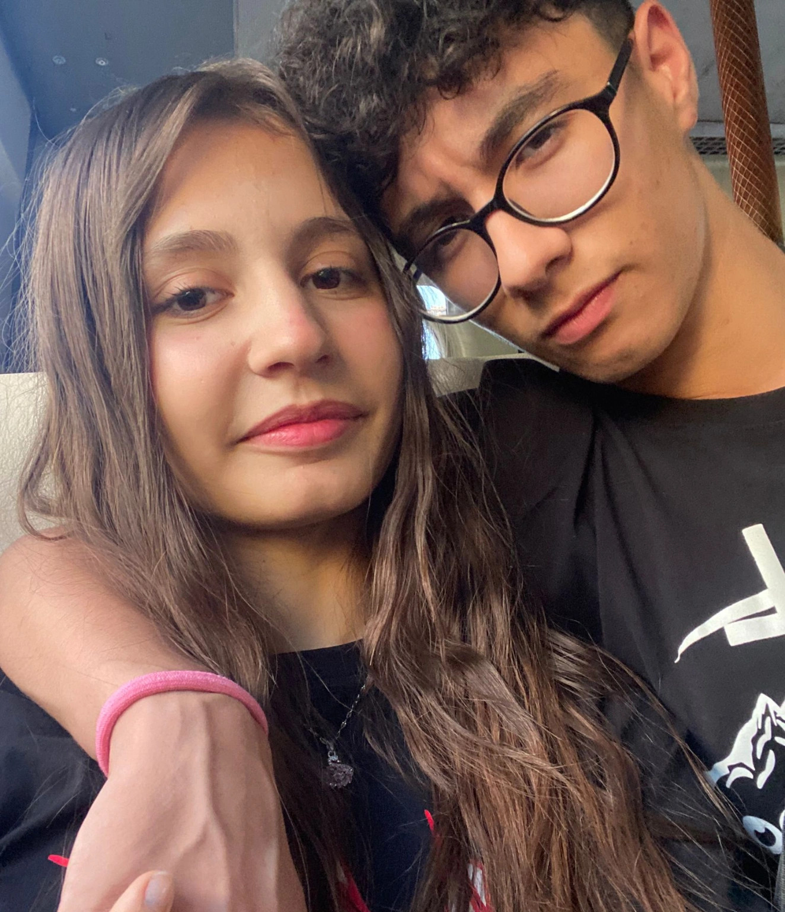
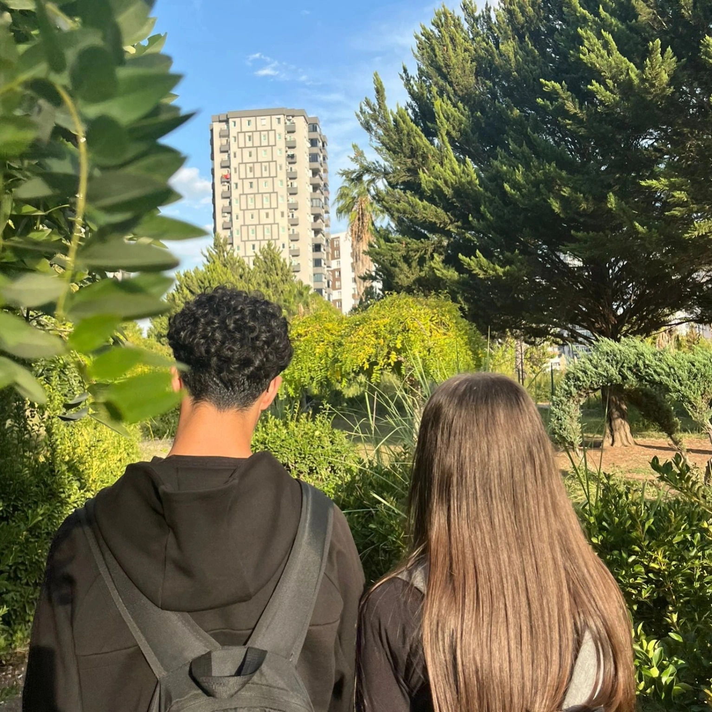

Yeşillikler arasında parkta, yanımızda en yakın arkadaşımız da vardı. Eve dönerken yağmura yakalandık, çok eğlenceliydi.

Sevgili olduğumuz ilk zamanlar, utangaç bir anda elimizle kalp yapmıştık ve gülümsemiştik. Anı kaldı çok güzeldi.

Nisa’nın doğum günü için sürpriz yaptım, küçük pasta ve mumlarla kutladık. Bankta otururken dilek tuttu, güzel bir gündü.

Etüt zamanlarımızda buluşup uzun parkta çimenlere oturup sohbet ediyorduk, çok güzel zamanlardı.

Otobüste foto çekilmek istedik, sonra okul çıkışında onu evine bırakıp geri evime yürüdüm. Yanımda olsun yeter.